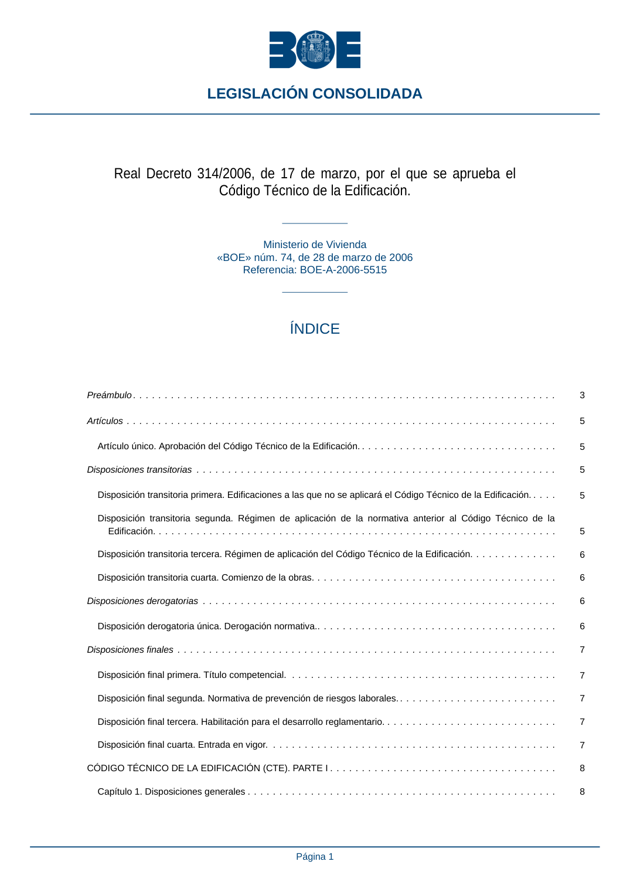

Real Decreto 314/2006: aprobación y Parte I del CTE · edición 2022-06-15 · capa oficial
Documento RD-314-2006-oficial · SHA-256 del PDF 298090e145f5558aceae49702b2ce132fe8fe8671bd87d650217c6a24bdd65ba
Página física 1 de 26.
Copia fiel del PDF fuente · Fuente oficial
Texto extraído y reorganizado: Basado en datos de la Agencia Estatal Boletín Oficial del Estado. PDF reproducido: Fuente de los datos: Agencia Estatal Boletín Oficial del Estado.
Formato: Texto de la página (Markdown)
Real Decreto 314/2006, de 17 de marzo, por el que se aprueba el Código Técnico de la Edificación. Ministerio de Vivienda «BOE» núm. 74, de 28 de marzo de 2006 Referencia: BOE-A-2006-5515 ÍNDICE Preámbulo . . . . . . . . . . . . . . . . . . . . . . . . . . . . . . . . . . . . . . . . . . . . . . . . . . . . . . . . . . . . . . . . . . . 3 Artículos . . . . . . . . . . . . . . . . . . . . . . . . . . . . . . . . . . . . . . . . . . . . . . . . . . . . . . . . . . . . . . . . . . . . 5 Artículo único. Aprobación del Código Técnico de la Edificación. . . . . . . . . . . . . . . . . . . . . . . . . . . . . . . . 5 Disposiciones transitorias . . . . . . . . . . . . . . . . . . . . . . . . . . . . . . . . . . . . . . . . . . . . . . . . . . . . . . . . . 5 Disposición transitoria primera. Edificaciones a las que no se aplicará el Código Técnico de la Edificación. . . . . 5 Disposición transitoria segunda. Régimen de aplicación de la normativa anterior al Código Técnico de la Edificación. . . . . . . . . . . . . . . . . . . . . . . . . . . . . . . . . . . . . . . . . . . . . . . . . . . . . . . . . . . . . . . . 5 Disposición transitoria tercera. Régimen de aplicación del Código Técnico de la Edificación. . . . . . . . . . . . . . 6 Disposición transitoria cuarta. Comienzo de la obras. . . . . . . . . . . . . . . . . . . . . . . . . . . . . . . . . . . . . . . 6 Disposiciones derogatorias . . . . . . . . . . . . . . . . . . . . . . . . . . . . . . . . . . . . . . . . . . . . . . . . . . . . . . . . 6 Disposición derogatoria única. Derogación normativa.. . . . . . . . . . . . . . . . . . . . . . . . . . . . . . . . . . . . . . 6 Disposiciones finales . . . . . . . . . . . . . . . . . . . . . . . . . . . . . . . . . . . . . . . . . . . . . . . . . . . . . . . . . . . . 7 Disposición final primera. Título competencial. . . . . . . . . . . . . . . . . . . . . . . . . . . . . . . . . . . . . . . . . . . 7 Disposición final segunda. Normativa de prevención de riesgos laborales.. . . . . . . . . . . . . . . . . . . . . . . . . 7 Disposición final tercera. Habilitación para el desarrollo reglamentario. . . . . . . . . . . . . . . . . . . . . . . . . . . . 7 Disposición final cuarta. Entrada en vigor. . . . . . . . . . . . . . . . . . . . . . . . . . . . . . . . . . . . . . . . . . . . . . 7 CÓDIGO TÉCNICO DE LA EDIFICACIÓN (CTE). PARTE I . . . . . . . . . . . . . . . . . . . . . . . . . . . . . . . . . . . . 8 Capítulo 1. Disposiciones generales . . . . . . . . . . . . . . . . . . . . . . . . . . . . . . . . . . . . . . . . . . . . . . . . . 8 LEGISLACIÓN CONSOLIDADA Página 1
